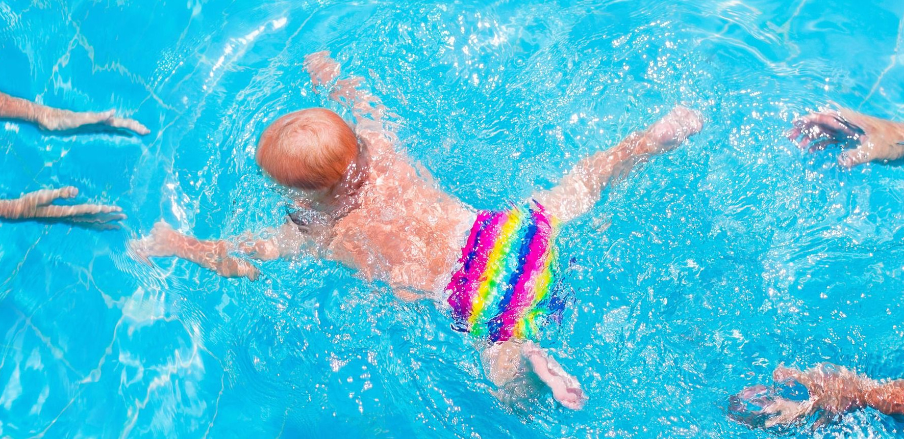

Раннє плавання - користь чи мода?
Власне сам цей рефлекс полягає у тому, що при зануренні обличчя у воду відбувається затримка дихання та сповільнюється серцебиття. Цей рефлекс притаманний багатьом ссавцям, та виражений у дітей до шести місяців. Також діти при зануренні у воду розмахують руками, що може нагадувати плавальні рухи. Це, а також яскраві фото немовлят під водою, якими повні блоги, соцмережі і реклами послуг рекреаційних закладів, створює уявлення про важливість таких процедур.
У рекомендаціях пишуть, що раннє плавання розвиває опорно-руховий апарат і корисне для психіки. Це - дуже зручна аргументація насправді, бо опорно-руховий апарат дитини і так активно розвивається, а вплив на психіку, насамперед, актуальний для батьків. Бо для них така активність є елементом різноманіття, а також переживання нового соціального статусу.
Але чи можна уявити, наприклад, самку шимпанзе, яка занурює своє немовля у воду, "щоб розвивати опорно-руховий апарат"? Звучить трохи сумнівно, погодьтесь. То, може, варто оцінювати існування таких рефлексів як один із захисних механізмів, а не заклик виховувати покоління фрідайверів?
Чому це може бути небезпечно?
По-перше, як не банально і страшно це звучить – дитина може захлиснутися або травмуватися. Діти в ранньом віці ще не можуть спеціально затамовувати подих та ще не настільки сильні, щоб тримати голову над водою. А при потраплянні води у вухо крихітка навряд чи зможе Вам про це сказати іншим способом, окрім плачу. Також в описах рекомендацій часто нагадують, що водні процедури потрібно здійснювати, коли " у дитини гарний настрій і вона позитивно налаштована". А як багато батьків, вже прийшовши в басейн, заплативши за його відвідування та послуги інструктора, але побачивши, що "дитина не налаштована", відмовляться від ідеї в нього зануритися?
Не кажучи вже й про те, що немовля під час такого "плавання" сильно наковтується води з басейну.
Те, що вода в басейні не надто чиста, сподіваємося, ні для кого не є сюрпризом. Про біорізноманіття, яке там часто плаває, можна детальніше почитати в нашому попередньому дописі. Додамо, також, що дитячі підгузки для плавання можуть стримувати лише тверду фазу випорожнень, але аж ніяк не оснащені бактеріальними фільтрами :). Більше того, ми знайшли публікацію однієї з груп американських дослідників, які показали, що підгузки для плавання також не утримують і більші частинки, як наприклад, ооцити криптоспоридій. У змодельованих дослідах вже за 10 хв після занурення майже всі мікросфери з аналогічним діаметром (модель ооцитів криптоспоридій) вивільнювалися у воду (1).
Що вже й казати про інші можливі кишкові інфекції.
А в дітей першого року життя, які НЕ відвідували басейн, спостерігався нижчий рівень частоти діарей, отитів та респіраторних інфекцій, у порівнянні з їх "плаваючими" однолітками (2, 3).
Дослідження останніх років відкривають чимало цікавих фактів про наслідки раннього плавання. Зокрема, було показано, що жорсткість води в басейні асоційована із підвищенням втричі ризику появи екземи у дітей (4).
Відомо, що у крові та сечі дорослих плавців після відвідування басейну реєструються токсичні хлор- та бромвмісні сполуки, які потраляють в організм не стільки через шкіру, скільки через вдихання. А в дітей, тим більше, немовлят, ще не налагоджена бар'єрна функція багатьох систем, вони більш вразливі до токсичних речовин (5).
Не можна не згадати і про подразнюючий ефект води з басейну на слизову очей та носа, який знайомий багатьом дорослим пловцям, а що вже говорити про ніжний незрілий епітелій немовлят! Тому з раннім плаванням пов'язано в подальшому підвищення більш як в 4 рази ризиків захворювань на бронхіт, а також – астми та алергій (6 , 7, 8).
Генеральна Рада Охорони Здоров'я Бельгії наполегливо рекомендує утриматися від плавання дітям до року, вказуючи на можливість початку таких заходів з 3-4 років (9).
Американська Академія педіатрії та Американський центр контролю та профілактики захворювань нагадують про відсутність науково обгрунтованих даних про безпечність існуючих програм плавання для немовлят та закликає зважувати можливу користь проти потенційних ризиків – гіпотертії, інфекційних захворювань, та ураження тканин дихальної системи хімікатами води (10).
